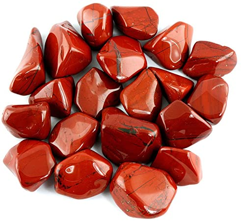

Jasper Red
Information
The red jasper stone comes from many places around the world, including Brazil, France, Germany, India, Russia, and the United States. You see them in cracks and veins of volcanic rocks and, interestingly, no one has ever seen jasper geodes that look like agate ones.
Red Jasper invites you to keep your focus and strength regardless of whatever task you are doing, especially during times of stress. For those who feel as though their mind and energy can flit out of focus, Red Jasper can bring you back. It is an exceptional tool for using as part of your meditation practice as alongside inviting endurance in difficult situations it has strong spiritual properties too.
Health Benefits
You can find here some Healing Properties.
Outfits